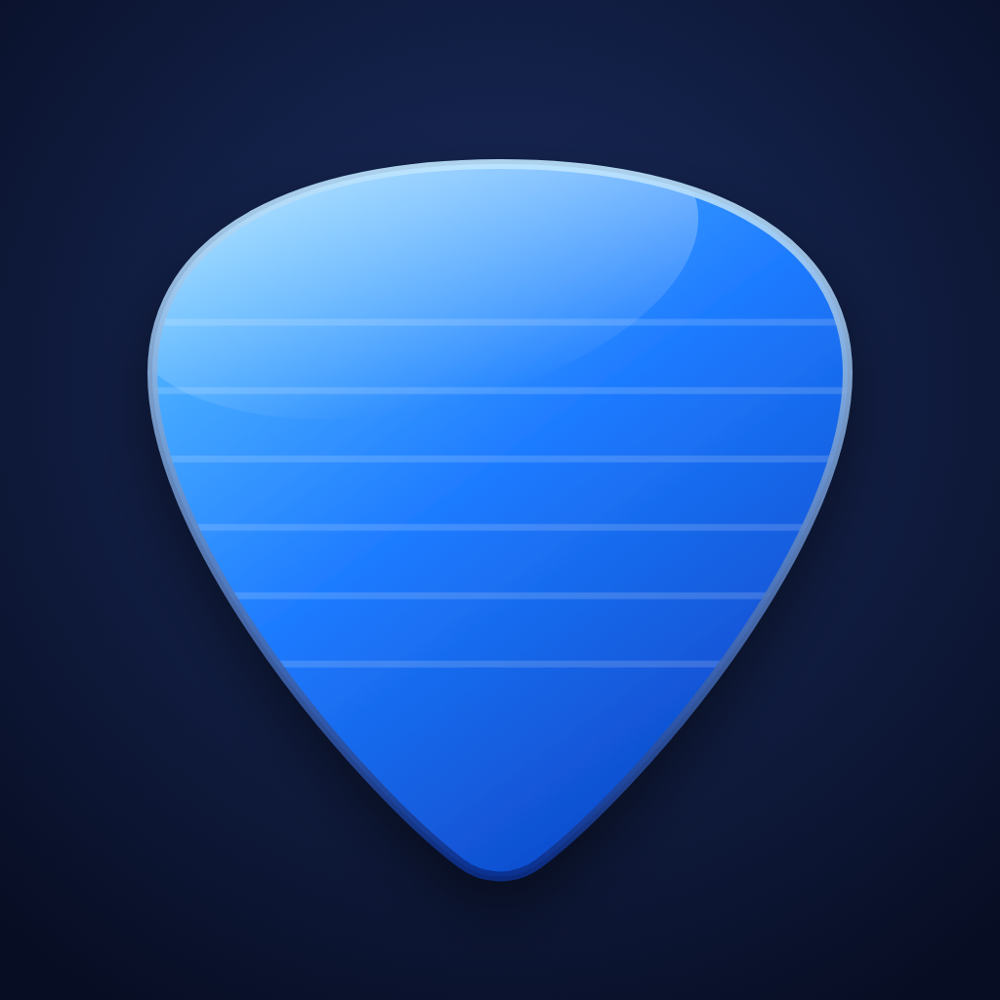

Fretline
Learn any song, bar by bar, over the real recording.
iPad and iPhone · SideStore / AltStore
Add the Fretline source once. New versions then appear as updates in SideStore or AltStore, with no .ipa to download by hand.
https://rbc33.github.io/Fretline/apps.json
- The buttons open the app on your iPad or iPhone. If nothing happens, copy the URL and add it under Sources → ＋.
- With a free Apple ID, apps expire after 7 days. SideStore refreshes them in the background.
Mac · Homebrew
macOS 14 or later.
brew install --cask rbc33/fretline/fretlineWhat's inside
- Guitar Pro (.gp, .gpx, .gp5…) and MusicXML
- Tab synced to the YouTube video, with a tap-along sync editor
- Loop any bars, speed from 25% to 150%, metronome and count-in
- Mute, solo and hide tracks; page or horizontal layout
- Built-in chromatic tuner
- Offline, no account, no ads. Free and open source (GPL-3.0)